WebVR е експериментален интерфейс за програмиране на приложения на JavaScript (API),
който позволява на приложенията да взаимодействат с устройства за:
виртуална реалност като HTC Vive, Oculus Rift, Google Cardboard
виртуална реалност с отворен код (OSVR) в уеб браузър
Той е внедрен в браузъри, базирани на Firefox и Chromium. WebVR е отворена
спецификация, която прави възможно преживяването на VR в браузър. Целта е да се улесни
влизането във VR преживяванията независимо от устройството.
Ако VR опитът е достъпен чрез интернет браузър, тогава всеки на практика може да му се наслади.
Някои от бариерите, които пречат на хората да използват виртуална реалност, ще бъдат премахнати,
тъй като няма да е необходимо да се изтеглят тежки приложения или да се купува мощен компютър.
Следователно разработването на WebVR не само прави виртуалната реалност по-достъпна, но и по-евтина.
2. Как да се потопим в изживяването с WebVR?
За да изпитате WebVR, са ви необходими две неща: комплект за виртуална реалност (слушалки и очила)
и съвместим браузър.
- Това е създадено от екипа на Mozilla VR за стартиране на екосистемата WebVR.
Може да се използва от HTML за водене до frameowrk и се представя изключително добре на
различни платформи.
- Този framework предлага завладяваща среда както за настолни, така и за мобилни
уеб браузъри. Такава среда ще се справи с всички елементарни сценови взаимодействия като
основен потребителски интерфейс за влизане в режим VR.
- Ако искате да създадете VR приложения само с JavaScript, това е
подходящият framework за вас. Дизайнът му е идентичен с React, като по този начин ви позволява да
създадете богата VR среда и потребителски интерфейс от декларативни компоненти.
- Този двигател е базиран на JavaScript и WebGL. Той е отличен за създаване
на игри в 3D и преживявания в HTML 5.
3. Какво правя, ако имам комплект за виртуална реалност? [1]
Разберете кой браузър е подходящ за Вас.
Работи най-добре с
Chrome
на устройства с Android.
Все още можете да изпитате съдържание на WebVR в други браузъри
на Android и iOS, но може да не е толкова гладко, тъй като тези браузъри
не поддържат напълно WebVR.
4. Какво правя, ако нямам комплект за виртуална реалност? [1]
Най-лесният начин да започнете е с основен комплект за виртуална реалност като
Google Cardboard.
Просто пуснете телефона си и сте готови за работа. Можете също да използвате
телефона си с по-усъвършенстван комплект като
Samsung Gear VR
и
Google Daydream.
За най-добра производителност и повечето функции можете да използвате VR комплект,
свързан към компютър, като
Oculus Rift
или
HTC VIVE.
Той ще позволи по-висока честота
на кадрите, по-високи резолюции и дори ще ви позволи да се разхождате във VR.
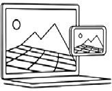
Или на някои сайтове можете просто да използвате компютъра или телефона си без такъв комплект.
Няма да можете да виждате в 3D или да взаимодействате толкова пълноценно в повечето светове на VR,
но все пак можете да се оглеждате на 360 градуса.
Въпреки че WebVR не е узрял напълно, компаниите вече са намерили някои интересни приложения за тях.
Един чудесен пример е уебсайтът за виртуална реалност, създаден от
Studio Zero,
който отброява до следващата версия на хитовото шоу на Netflix „Stranger Things“. Въпреки че това е
само часовник, който отброява дните и часовете до следващия епизод, виртуалната реалност е създала
завладяващо преживяване. Може да се наслаждавате без слушалки и привлича повече потребители от
очакваното. Ако желаете, може да видите видео за измисления WebVR часовник
тук.
LearnBrite
е създал интересен пример за образователни цели. Това е виртуална класна стая
с капацитет 100 000 души. Може да се използва както за обучение, така и за провеждане на срещи,
презентации. Това е много удобно, защото може да се взаимодейства с всички останали участници в
стаята, въпреки че всички могат да са разпределени на различни места. По този начин се премахва
необходимостта от пътуване, за да се присъства физически на събрание.
Тази информация ни дава представа за това, на което WebVR наистина е способна и как ще добави
завладяващ елемент към ежедневното ни преживяване. Тъй като технологията става все по-напреднала,
се очаква да се видят още по-голям набор от преживявания, който може да бъде и много персонализиран.
Това отваря много възможности за бизнеса да ангажира своите клиенти и да предаде посланието им
по-ефективно. Като цяло това ще означава, че потребителите ще се радват да сърфират в уебсайтове,
предложения за услуги и всякакви други обичайни преживявания.
Този проект представя начин за създаване на Слънчева система, която да изглежда реалистична с
текстури, анимации и осветление. A-Frame е лесен начин за изграждане на собствени сцени на
WebVR (Web Virtual Reality - Уеб за виртуална реалност). Не е необходимо да се инсталира нещо
и сцените могат да бъдат направени с прост HTML. Проектът има код, който може лесно да се смеси,
за да създаде свои собствени сцени.
Препоръчва се да се използва инспектора на A-Frame - мощен инструмент, който се доставя с A-Frame,
и дава възможност да се изследва и модифицира визуално кода на вашата сцена. Можете да видите
как изглежда анимиран планетариум в уеб на
Фигура 1
и сцена за създаване на виртуална реалноств уеб на
Фигура 2. Също така може да видите как изглежда и кодът на този проект на
Код 1.
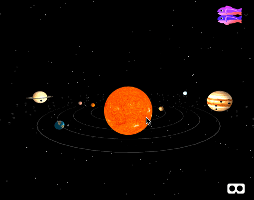
.
Примерен изглед на анимиран планетариум. Кодът зад този пример съдържа компонента A-Frame
Orbit Controls. За да се обиколи около сцената, се използва плъзгане на курсора или сензорния
екран. В повечето мобилни устройства можете да се натисне за увеличиване.
[3]
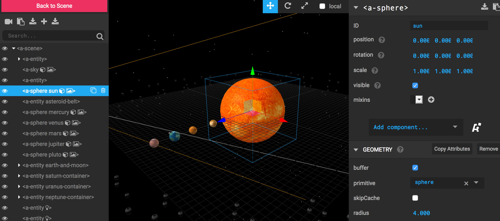
.
Сцена за създаване на проекти за уеб виртуална реалност.
[3]
.
Зад осъществяването на анимиран планетариум като виртуална реалност в уеб, разбира се, стои код.
На какъв език мислите, че е написан? По-долу е показан целият код на WebVR анимиран планетариум,
който се състои от един html файл, който от своя страна използва A-frame и допълнителни js файлове.
Бутонът
всъщност показва резултата от кода, който в случая е точно анимиран
планетариум във виртуална реалност в уеб. Може с левия бутон на мишката да се кликне върху него
и да се видят планетите от различен ъгъл, което е и главната идея на този малък проект. Ако желаете да видите
резултата в по-голямо пространство, може да кликнете върху бутона
, за да скриете кода. Може да използвате левия бутон на мишката, за да
разгледате в подробности. [3]
Има множество начини за анимиране в A-Frame. A-Frame съдържа анимации, които могат да се използват
с
.
На
Код 2
може да видите как Марс се върти:
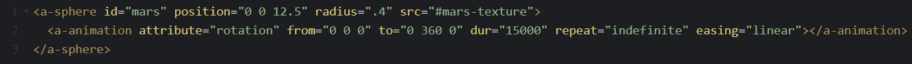
. Примерен код, който демонстрира завъртане
на планетата Марс.
[3]
Но този стартер използва
компонент. Той работи със системата от компоненти на
обекта, а разработчиците на A-Frame казват, че това е бъдещето на анимацията в A-Frame. На
Код 3
може да видите такъв пример.
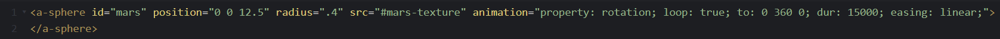
. Примерен код, който демонстрира използване
на aframe-animation компонент за завъртане на планетата Марс.
[3]
- Типът анимация, който искаме като въртене,
мащабиране (създаване на нещо голямо или малко), цвят (промяна на цвета).
- Продължителността на анимацията. По-малко означава
по-бързо!
- Координати във формата (x, y, z).
- Определя дали да се върти анимацията.
- Скоростта на промяна в анимацията във времето.
За планетариума се използват две основни анимации - завъртане и орбита.
Използват се много пъти и би било доста досадно да се добавят към всяка планета и луна.
Така че може да се използват така наречените миксини (mixines). Те позволяват да се направи
шаблон, който да се използва няколко пъти. Пример за миксин е
Код 4,
който може да се използва
за оцветяване на всичко червено:
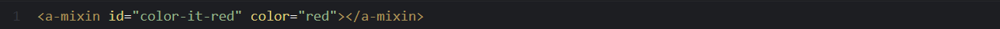
. Пример за използване на mixin (миксин).
[3]
За да се използва, всичко, което трябва да се направи, е да се използва атрибута mixin с името.
Но какво, ако искаме нещо да е малко по-различно? Винаги можем да го заменим малко, като тук
заместваме продължителността по подразбиране на анимацията, за да направим орбитата малко по-бавна
с animation = "dur: 90000;" (Код 5)
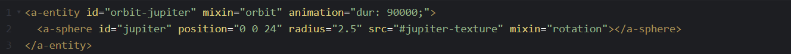
. Пример за използване на mixin (миксин)
с допълнително условие за duration (продължителност).
[3]
Както виждате, ние също обвихме сферата на планетата в нова
.
Това е така, защото ако просто приложим орбитата към самия Меркурий, ние просто караме Мекурий да
се върти. Трябва да създадем контейнер отвън и да накараме контейнера да се върти. За да го
визуализираме, можем да добавим геометрия и цвят към орбитата и да видим как изглежда
(Фигура 3). Може да видите и Код 6.
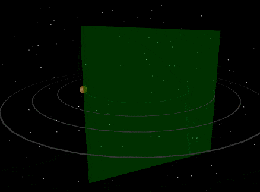
. Меркурий се върти около себе си и
орбитата си.
[3]
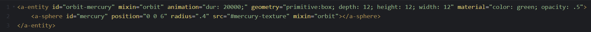
. Примерен код, който демонстрира как
планетата Меркурий се върти около себе си и орбитата си.
[3]
Добавянето на светлина е друг начин да се оживи A-Frame сцената. Всички сцени с A-Frame имат
осветление по подразбиране. Когато се добави собствено осветление, осветлението по подразбиране
изчезва. Така можем да видим осветените планети, обърнати към слънцето. Това е точков тип
осветление. Добавяме специално засенчване на материал =
към слънцето, така че да е
предпазено от осветлението, в противен случай самото слънце не би било осветено.
Но добавяме и малко околно осветление, което осветява цялата сцена. Може да видите на
Фигура 4 какъв е ефектът.
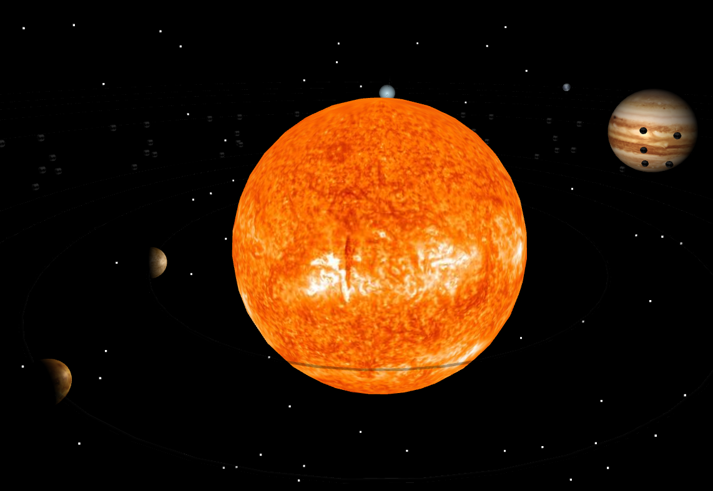
. Изглед на Слънцето с добавено
осветление и текстури.
[3]
Всеки трябва да може да изпита VR, а WebVR е голяма стъпка в тази посока.
Той е отворен за всички браузъри, което улеснява разработчиците да създават
бързо нещо и да го споделят с всички, независимо на какво устройство са.
Web VR донесе виртуална реалност в мрежата, улеснявайки всеки да
създава, да се наслаждава и да споделя VR преживявания. Следващата
фаза на тази еволюция е WebXR, която ще комбинира Web VR и AR в един API.
Докато се извършва преходът, нашите експерименти с уеб VR на живо няма да
бъдат достъпни, но все пак можете да демонстрирате някои от проектите в 360.
На Видео 1 имате възможност да изгледате кратко
видео за това как уеб виртуалната реалност може да присъства в нашето ежедневие.
По-долу са показани някои примери, с помощта на които може да навлезете в уеб виртуалната
реалност.
Пример 1 демонстрира играта тенис на маса, която може да се играе
срещу опонент или срещу стена.
Пример 2 показва, че в уеб виртуалната реалност е възможно да
присъства и музиката като компонент.
Пример 3 показва различни фигури, които могат да променят
формата си.
Върху всяко изображение имате два бутона -
и .
Бутонът отваря нов прозорец, в който може да тествате
съответния пример. Бутонът отваря нов прозорец, който
съдържа кратка информация за примера, който сте избрали, като съответно имате и опция да видите
какъв код стои зад всеки един от примерите. И за трите примера може да навлезете в уеб виртуалната
реалност, като имате възможността да завъртате прозореца и да наблюдавате от различни ъгли.
[4]
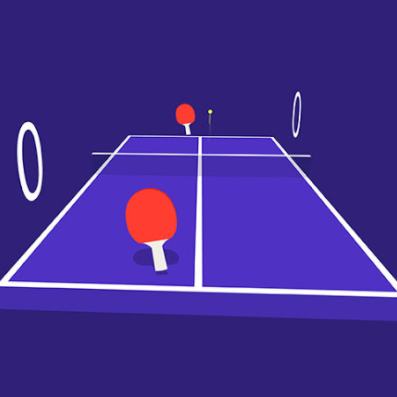
.
Игра "тенис на маса" във VR. Може да играете срещу опонент или стена.
[4]
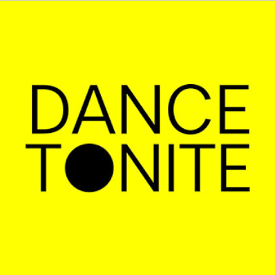
.
Във VR присъства и музиката. Чрез този пример може да направите своя експеримент.
[4]
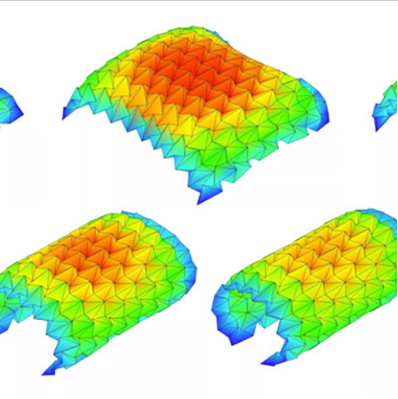
.
В WebVR проверете как произволни модели на оригами ще се сгънат в 3D.
[4]
8. Използвана литература
Информационен сайт "webvr.info"
[https://webvr.info/],
последно посетен на 09.04.2021 г.